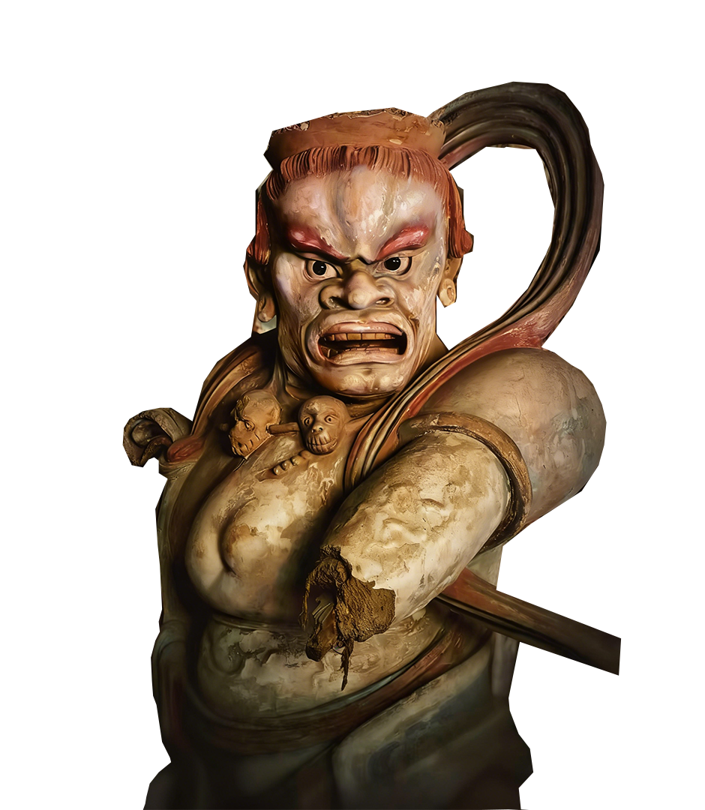
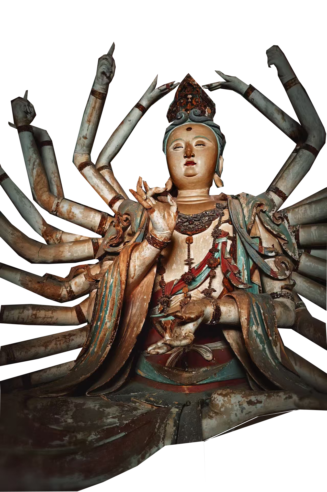
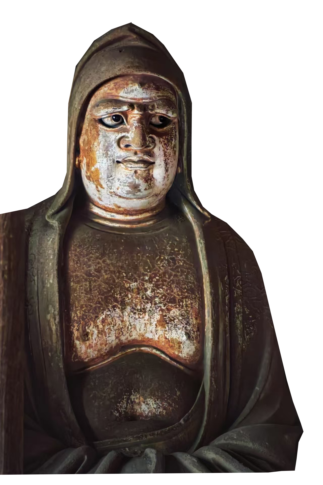
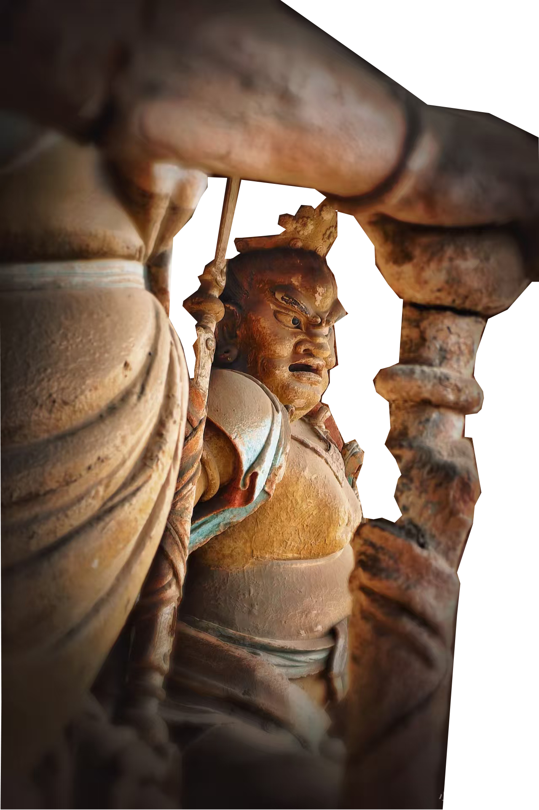

遗产定位
平遥彩塑是我国北方汉民族传统雕塑艺术的杰出代表，双林寺彩塑最为惊艳，四大金刚、哑罗汉、韦驮像等造像精美传神。
双林寺被誉为“古代雕塑博物馆”“东方彩塑艺术宝库”，1997年列入世界文化遗产名录，成为中外闻名的艺术瑰宝。
东方彩塑瑰宝 · 世界文化遗产
平遥彩塑是我国北方汉民族传统雕塑艺术的杰出代表，双林寺彩塑最为惊艳，四大金刚、哑罗汉、韦驮像等造像精美传神。
双林寺被誉为“古代雕塑博物馆”“东方彩塑艺术宝库”，1997年列入世界文化遗产名录，成为中外闻名的艺术瑰宝。


始于东汉萌芽，宋元明清步入鼎盛，诞生镇国寺、双林寺等大批传世精品。
民国至改革开放前发展低迷，1978年后经系统性修复修缮，彩塑艺术重获新生。
千年传承跌宕兴荣，见证了传统雕塑艺术的兴衰更迭。
恪守“绘塑合一”传统，分立骨、贴肉、穿衣、装饰彩绘四大核心步骤。
采用天然矿物颜料，运用涂、染、描、贴金等技法，设色大胆，视觉冲击力极强。
工艺考究技法精湛，每一步都凝聚着匠人匠心。


形神兼备、气韵醇厚，具备点睛传神、佛俗相融、线韵相融、静中寓动四大特征。
突破宗教造像刻板范式，将艺术美感与生活意象完美融合，极具感染力。